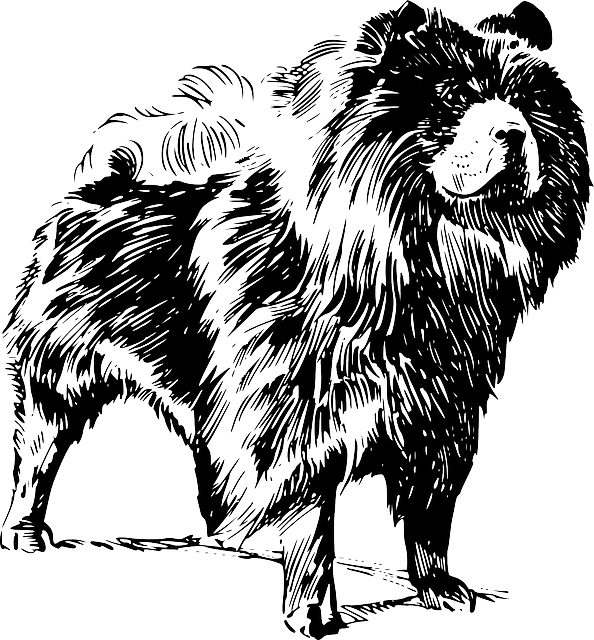
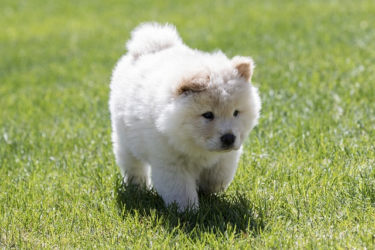
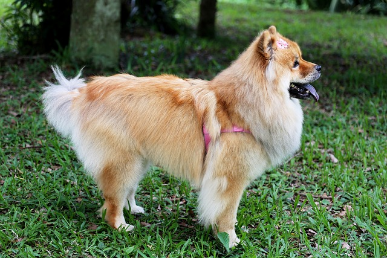
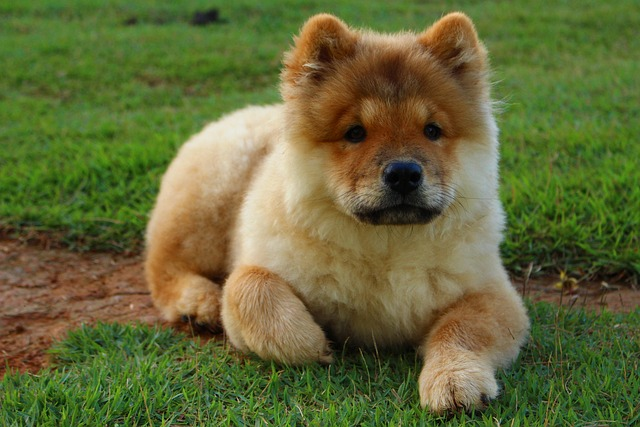

Come and see best bois in the world. They are magnificent creatures with fluffy body.
Some chow chow facts.

Look at this fluffy draw.

Another fluffy boy.

Did I said these guys are fluffy ?

Best doggo ever.
An ancient breed of northern Chinese origin, this all-purpose dog of China was used for
hunting, herding, pulling and protection of the home. While primarily a companion today, his working origin
must always be remembered when assessing true Chow type. The general outline of a fully-coated Chow. A
powerful, sturdy, squarely built, upstanding dog of Arctic type, medium in size with strong muscular
development and heavy bone. The body is compact, short coupled, broad and deep, the tail set high and
carried closely to the back, the whole supported by four straight, strong, sound legs.-Richard G. Beauchamp
Call to learn more about these good boys!
Sign up for latest informations about this best doggos.